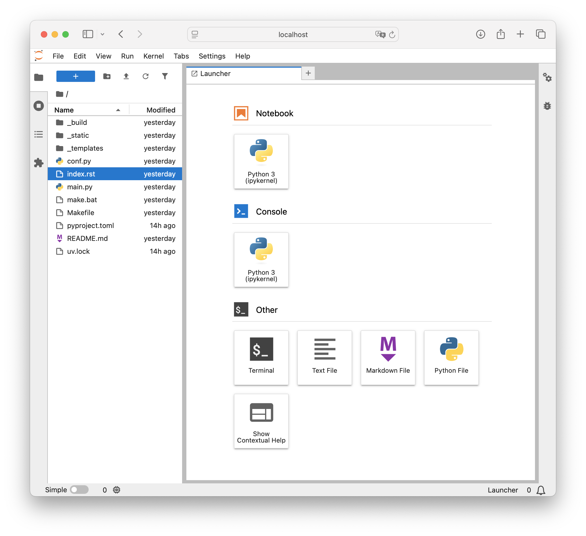
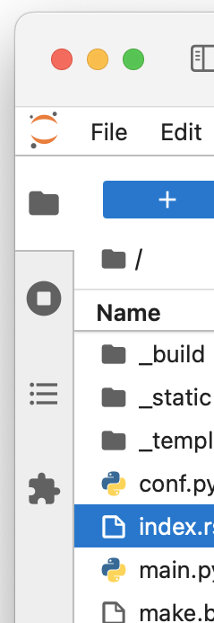
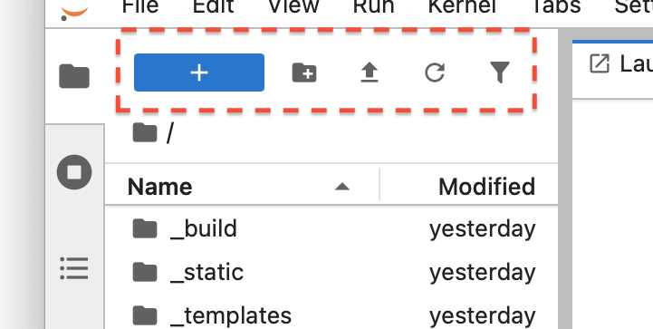
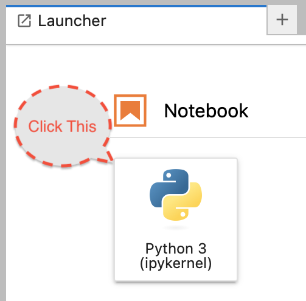
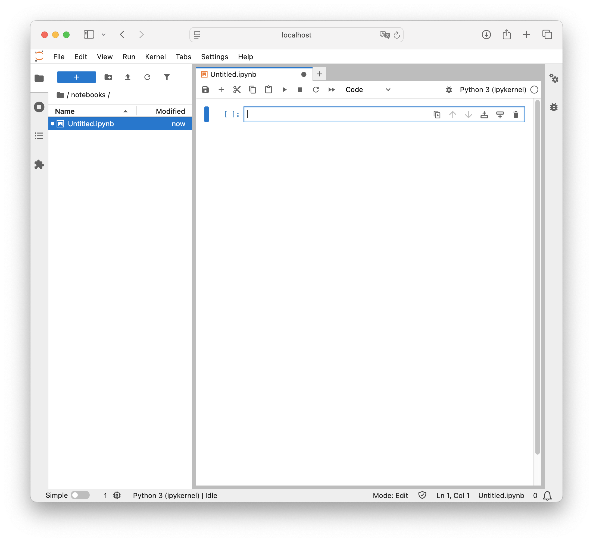
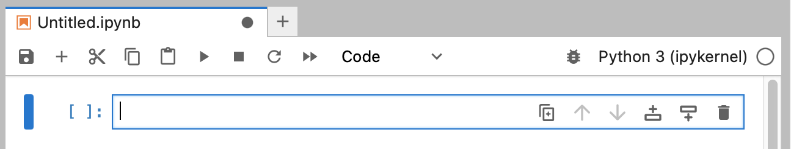
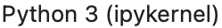

OpenD6 Tools¶
We need two more tools to tackle the complicated problems of spells and characters (as well as creatures and items.)
We’re going to extend the Change-Compute-Consider cycle. Here’s one aspect:
It will involve changing the Spell definition (or Character definition) files in the project directory.
Compute new values for the dice budget or the difficulty.
Consider the resulting Spell or Character or Creature.
This cycle of changes is really the first Change for the rest of the cycle:
Compute revised RST from the revised Spell (or Character) definition files.
Compute revised HTML from the revised RST.
Consider the resulting target document.
The detailed computations depend on the opend6-tools project.
This project provides two Domain-Specific Languages (DSLs).
One language help define Spells, Invocations, and Magical Items.
The second defines Characters, and Creatures.
We’ll also show how to use Jupyter Lab. This is an interactive computing environment where we can define and modify these DSL statements. It supports an almost instantaneous Change-Compute-Consider cycle.
More Advanced Configuration
More advanced users may also want to add spyder-kernels to help Spyder work with the version of Python we installed using uv.
The Spyder “preferences” editor (a wrench icon) has a Python Interpreter panel.
On this panel, select the Selected Interpreter option and fill in the path to the Python run-time installed in the earlier part of the tutorial.
Step 1: Install OpenD6-Tools¶
We install the OpenD6 tools with a uv command:
uv add opend6-tools
That’s about it for the installation. We’ll test it by starting Jupyter Lab and creating a Spell notebook.
Step 2: Start Jupyter Lab¶
We don’t really need to install Jupyter Lab. This is because the uv tools can handle this detail for us, if we have a working internet connection.
For folks who sometimes work offline (or live off the grid) it can help to install Jupyter Lab once to avoid network traffic when using uv.
(Install it with uv add jupyter-lab.)
Before we show the command, it’s important to note that Jupyter Lab has two active ingredients:
A “jupyter lab” service, simmering slowly on a back-burner.
A browser window that the designer uses to create Spells and Characters. This will interacts with the service.
Here’s a picture of what will be going on:

Because there is both a browser and a service, we need to have two windows open:
The Browser window with the interesting interactive parts of Jupyter lab.
A Terminal (or Powershell) window with the Jupyter lab log. This is used to start the service and the browser. After that, it can be safely ignored.
We’ve belabored this to make it clear why starting Jupyter Lab involves the following sequence of steps:
Open a fresh, new Terminal window.
Follow the steps from Start Writing to navigate to your project and activate the virtual environment.
These commands are typical for macos and Linux. These are not for Windows.
Change to the
my_bookworking directory.cd ~/Documents/my_book
Activate your virtual environment.
source .venv/bin/activate
To run Jupyter Lab with an automatic download and install, use this command.
uv tool run --from jupyter-core jupyter lab
This is kind of complicated-looking, but it has several parts.
We’re using the uv tool command. Specifically, the
uv tool runsub-command.We need to tell uv tool to download and install the
jupyter-coreproject, if needed. This--fromoption is required because the project’s name and the command we want to run don’t align exactly. Sometimes, the project name and the command name are the same, and the--fromoption is not needed. This is not one of those cases.The
jupyter-coreproject defines ajupytercommand we want to run. This command is given thelabargument value.
When Jupyter lab starts, it sprays a ton of information into the Terminal window.
More importantly, it also launches a browser window that looks like this:

Jupyter Lab window in the browser.¶
Yes. Jupyter Lab is an IDE. Double click on the index.rst or conf.py files and edit them here.
Or use Spyder to edit them.
Here’s the comparison between Jupyter and Spyder.
Tool |
Text Edit |
Edit Notebooks |
Startup |
|---|---|---|---|
Jupyter Lab |
Yes |
Yes |
Annoying to Start |
Spyder |
Yes |
No |
Easy to Start |
We can do everything in Jupyter Lab. It takes a bit of work to start it up.
Or, we can do almost everything in Spyder except create Notebooks. Since Spell design is a specialized activity, perhaps we can use Spyder for most things, and only start Jupyter Lab when needed.
Interestingly, we can do everything in a tool like PyCharm. It will edit notebooks as well as edit text documents.
We’ll finish this part of the tutorial by creating a simple Notebook.
Step 3: Create a Notebooks Folder¶
The left-most edge of the Jupyter Lab window looks like this.
{kind=link}

The four icons on the left-most edge of a Jupyter Lab window, the File Browser is selected.¶
It has these four icons down the side of the window:
The “File Browser” has a file folder icon. Selecting this shows files in the working directory. This is generally what’s shown initially, and we’ll use this heavily as we create files.
The “Running Terminals and Kernels” has an icon with a circle with a small square inside. If we select this, we’ll see some details of the Jupyter services. This includes open tabs, processing kernels, language servers, recently-closed notebooks, workspaces, and terminal sessions. We rarely need to care what’s running in the background.
The “Table of Contents” shows a three-item bullet list icon. This is used to visualize the structure of the currently open Notebook. With no notebook open, this isn’t very helpful. However, once we start creating notebooks, this can be handy for looking at the structure of the notebook.
At the bottom, the “Extension Manager” has a puzzle piece icon. This is used to add extension components to Jupyter Lab.
When the file folder is active on the left edge, the pane next to this is filled with the folders and files of our project.
The top of the File Browser panel has five icons and looks like this:
{kind=link}

Five icons for controlling the File Browser.¶
Here is what these five icons do:
A highlighted blue rectangle with a “+” sign to create a new Launcher tab. The Launcher tab (which fills most of the window) has icons to launch notebooks, consoles, or “other” file editors.
A small file folder with a “+” sign to create new directories in the current directory.
An upward arrow, used to upload files to this notebook.
A little clockwise circle for refreshing the display. This is useful if we make changes to the directory using OS tools or Spyder and need to force Jupyter Lab to synchronize with those changes.
A little funnel to allow a filtered view. This can be helpful in the cases where there are a lot of files and the display is cluttered with irrelevancies.
We need to create a notebooks folder, and put a new Notebook in that folder.
Do the following three steps to create an empty notebook in a new folder.
Click the icon of a file folder with the “+”. This will add a new folder to the list of files. Then, fill in
notebooksas the name of this folder. It’s helpful to keep the notebooks sequestered, since they’re not really part of the final document. They’re files we’ll create as part of doing design work.Double-click the new
notebooksfolder in the left side to focus on that folder only. The top of the left panel will show the folder and `` / notebooks`` to show the current directory. Also, the top of the center panel will have the wordnotebooksto emphasize the current directory.In the center panel, under the “Notebook” banner, click the
Python 3 (ipykernel)icon to create a new Notebook in thenotebooksfolder.
{kind=link}

The icon for starting a new notebook.¶
This will open a new notebook with the name “Untitled”. The center panel will change from the Launcher to the new notebook. It will look like this:

Jupyter Lab with a new, empty notebook.¶
We can put some Python stuff into this notebook.
For fun, put 355 / 113 into the cell.
Either use Shift-Return (on some keyboards it’s Shift-Enter) to execute the cell.
Or click the ▶︎ button to execute the Python code in the cell.
The results of this Python expression are displayed below the cell. This is about all the computer programming we’re going to do. In the next section, Define Spells, we’ll look closely at the Spell DSL.
Step 4: Experiment with the notebook¶
On the top row of the “Untitled.ipynb” panel are string of icons for updating the notebook’s content.
Here are the images:
{kind=link}

Icons for editing a notebook.¶
From left to right, here’s what the icons mean:
 Run this cell and advance
Run this cell and advance Restart the kernel and run all cells
Restart the kernel and run all cellsSelect the cell type from a drop-down menu with three choices:
Code,Markdown,Raw
Switch kernel. This may have some alternative kernels listed.Kernel status. The open, empty circle means it’s idle, waiting for something to run.
{kind=link}
{kind=link}
{kind=link}
{kind=link}
{kind=link}
{kind=link}
{kind=link}
{kind=link}
{kind=link}
{kind=link}
{kind=link}
The first five of these – , , , , and – match word processing and text editing applications.
The rest are unique to Jupyter Lab.
Of these, the two that seem most useful are  and
and  to run the various cells, executing the Python code, and creating the Spell definitions.
to run the various cells, executing the Python code, and creating the Spell definitions.
Codeis the ordinary DSL statements we’ll see in the next part of the tutorial. Spell and Character definitions.Markdownis a language, like RST, allowing someone to write plain text and have a nicely formatted block of text in the cell. These cells are a good place to keep notes, comments, ideas, and other tidbits of information.Rawcells simply have text, neither code to be evaluated nor markdown to be formatted. These, too, are places to keep notes, comments, ideas, and other tidbits of background or plans.
There’s little reason to run the debugger, or change kernels. The right-most icon, will change sometimes. Since the amount of computation is small, this won’t change much.
Here are some things to do to help build some skills with Jupyter Notebooks.
Change the first cell to look like this:
pi = 355 / 113
When it runs, there’s no output. The value was stuffed into a variable.
Add a second cell that looks like this:
print(pi)
This will have some output we can look at. Use the  icon to run both cells and confirm that one creates an object,
icon to run both cells and confirm that one creates an object, pi, and the second cell prints the object.
This precisely parallels the way we’ll work with Spell definitions.
Step 5: Save and Shutdown¶
When a notebook has a good spell definition, it needs to be saved.
A title of Untitled isn’t really the best plan.
Right-click on the notebook name. Either on the left, in the File Browser panel, or at the top of the notebook pabel. A menu will pop up that has an item to Rename the notebook.
Pick a more useful name.
Important
In the long run, the name needs to be one word composed of letters, digits, and _.
The OS allows more complex names, but they can present complications when working with other tools.
It helps to think about the book, and the place the spells will occupy. There may be multiple collections of spells and incanations. The collections may be organized by skill or rank.
Perhaps a name like spells_alteration or spells_rank2 would clearly identify the contents of the file.
When we’re done with Notebooks, look at the File menu.
The last item is Shut Down.
This will stop the service, currently running in a Terminal window.
Conclusion¶
We’ve got a suite of sophisticated tools:
Sphinx
Spyder
Jupyter Lab
We’ve extended our Python environment with the opend6_tools with DSL’s to help create Spells, Invocation, Items, Creatures, and Characters.
These tools support the Change-Compute-Consider cycle on two scales.
The individual Spell or Character scale: Use Jupyter Lab to change-compute-consider.
The document as a whole scale: Use Terminal command
make htmlto rebuild the web page (or PDF or EPUB) with revised content.
It’s time to learn the Spell DSL.